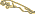
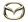

| Circuit | Date | Winner | ||
| Suzuka | 14 April | #5 - M.Baldi / P.Alliot (Peugeot Talbot Sport - Peugeot 905) | ||
| Monza | 5 May | #3 - D.Warwick / M.Brundle (TWR Jaguar - Jaguar XJR14) |  | |
| Silverstone | 19 May | #3 - D.Warwick / T.Fabi (TWR Jaguar - Jaguar XJR14) | ||
| Le Mans | 23 June | #55 - V.Weidler / J.Herbert / B.Gachot (Mazdaspeed - Mazda 787B) |  | |
| Nürburgring | 18 August | #3 - D.Warwick / D.Brabham (TWR Jaguar - Jaguar XJR14) | ||
| Magny Cours | 15 September | #6 - K.Rosberg / Y.Dalmas (Peugeot Talbot Sport - Peugeot 905) | ||
| Mexico City | 7 October | #6 - K.Rosberg / Y.Dalmas (Peugeot Talbot Sport - Peugeot 905) | ||
| Autopolis | 28 October | #2 - M.Schumacher / K.Wendlinger (Team Sauber Mercedes - Mercedes-Benz C291) | ||